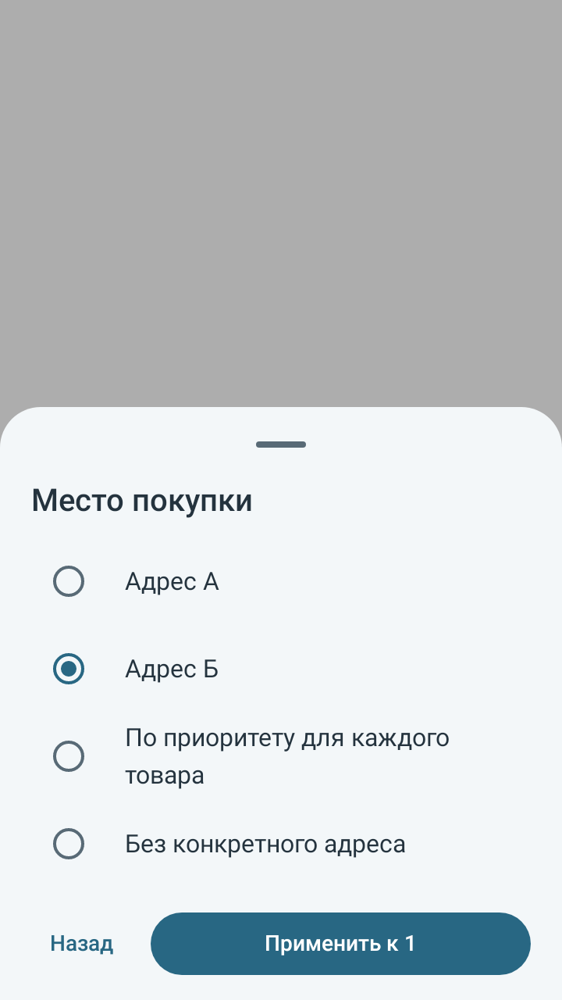
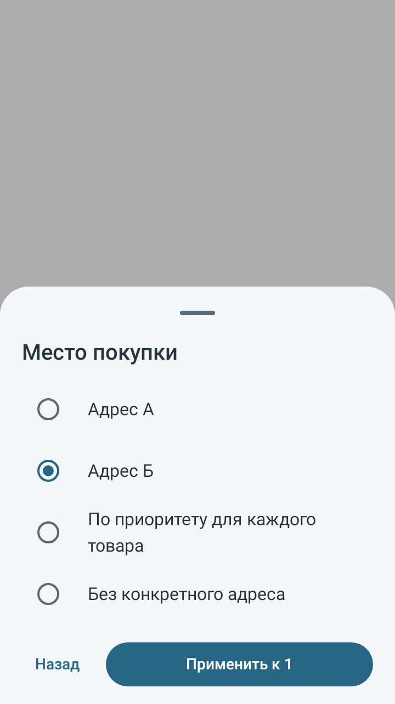
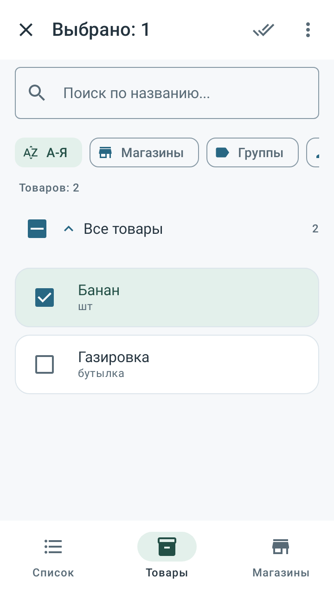
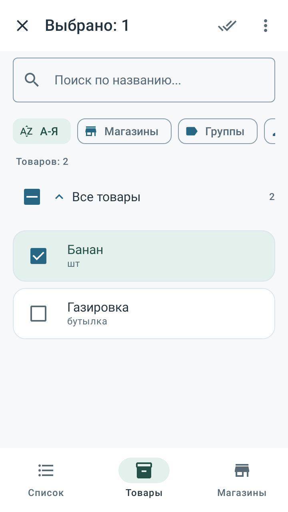
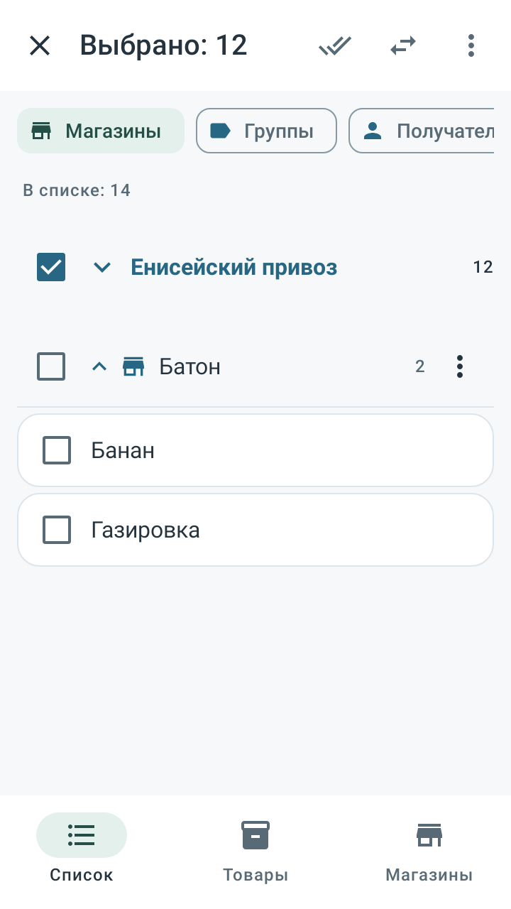

Независимый аудит приложения
«Список рядом · новая» 0.12.1 · 19 октября 2026
Вывод
Повторная полная замена архитектуры не потребовалась. Подтверждённые ошибки на границах карточки, черновиков, покупок, массовых команд и восстановления исправлены; затем проверены связанные сценарии и прежние регрессии.
Исправления
- Карточки и внешние изменения. Старый черновик не отменяет перенос, приоритет, новый магазин и переименование единицы. Активная карточка принимает внешнюю правку, сохраняя новый текст и незавершённое количество.
- Доступность и справочники. Пустой ограниченный выбор отличается от доступности во всех точках. Удалённые ссылки и группы не восстанавливаются из старого черновика.
- Одинаковая привязка. Одиночная и массовая команды одинаково разрешают ожидающие автоматические покупки, сохраняя допустимые явные покупки и купленную историю.
- Преобразование рынка. Сохраняются индивидуальный порядок павильонов, относительный порядок других продавцов и физические ID.
- Восстановление. После SQLite commit завершаются владение фото, поколение черновиков и настройки даже при отмене вызывающего экрана. Смена локальной метки базы сбрасывает прежний выбор и открытые действия.
- Выбор и массовые действия. Заголовки магазина, отдела и рынка выбирают весь раздел, включая свёрнутые строки; пересечения не удваивают операции. Выбор переживает пересоздание экрана.
- Явная точка покупки. Массовое добавление позволяет выбрать адрес, использовать приоритет товара или оставить адрес неопределённым. Действия ожидают загрузки всех вариантов.
- Устаревшие покупки. Срочность доступна некупленным. Массовый перенос отклоняется целиком, если покупка уже отмечена виджетом или другим экраном.
Как проверялось
Три независимых направления: домен и связи; хранение, черновики, копии и отмена; интерфейс и единообразие. Исправления прошли перекрёстную проверку.
| Проверка | Результат |
|---|---|
| Полный итоговый набор | 507 тестов в 53 классах; 0 failures/errors/skipped |
| Состав | 435 прежних и 72 новых проверки |
| Сборка APK и lint | BUILD SUCCESSFUL, 25 мин 42 с |
| Lint | 0 ошибок, 116 предупреждений, 3 подсказки |
| Нативная отрисовка | 6 изображений на Android API 28 и 35 |
Полный набор выполнен до замены двух тестовых архивов синтетическими данными для публичной публикации. В течение этого набора 201 файл исходников, тестов, схем и сборки оставался неизменным, прежние исходники тестов не менялись. Очищенные JUnit XML отражают именно этот прогон. Из них удалены hostname, свойства окружения и потоки вывода.
После замены фикстур повторно проверен Refine080DataTest: 6/6 тестов на API 28 и 35, 0 failures/errors/skipped; BUILD SUCCESSFUL за 1 мин 21 с. Остальные 501 тест из исторического полного набора не менялись. Для 139 файлов приложения, схем и сборки вне app/src/test повторное сравнение хешей не выявило изменений.
JUnit повторной проверки фикстур
Производственный код и APK при замене тестовых архивов не менялись. Полный набор после этой замены повторно не заявляется.
Проверенные экраны


Явная точка массового добавления · API 28

Явная точка массового добавления · API 35

Выбор после пересоздания экрана · API 28

Выбор после пересоздания экрана · API 35Выбор свёрнутого рынка · API 28


Выбор свёрнутого рынка · API 35Нативная отрисовка Android/Compose в тестовом окружении. На изображениях — синтетические данные.
Границы подтверждения
Физический телефон не подключался. OEM-лаунчер, настоящая клавиатура и камера, передача в Telegram и аппаратная плавность отдельно не проверялись. Успешное прохождение тестов подтверждает перечисленные сценарии, а не отсутствие любых возможных ошибок.
Результаты всех 53 классов
| Набор | Проверок | Ошибок |
|---|---|---|
| ArchitectureDataTest | 12 | 0 |
| ArchitectureMigrationTest | 3 | 0 |
| ArchitecturePolicyTest | 3 | 0 |
| ArchitectureUiTest | 8 | 0 |
| Audit121ActiveEditorTest | 6 | 0 |
| Audit121DomainTest | 16 | 0 |
| Audit121StorageTest | 12 | 0 |
| Audit121SynchronizationTest | 22 | 0 |
| Audit121UiTest | 16 | 0 |
| AuditDomain071Test | 10 | 0 |
| AuditIntegrity071Test | 9 | 0 |
| AuditStorage071Test | 12 | 0 |
| AuditUi071Test | 9 | 0 |
| AuditUiNavigation071Test | 2 | 0 |
| BranchMigrationTest | 1 | 0 |
| BulkCancellationTest | 6 | 0 |
| CardDraftTest | 1 | 0 |
| CatalogUiTest | 2 | 0 |
| DatabaseSmokeTest | 1 | 0 |
| DraftDepartmentTest | 4 | 0 |
| FuzzySearchRegressionTest | 3 | 0 |
| IndependentDataAuditTest | 6 | 0 |
| IndependentDomainAuditTest | 7 | 0 |
| IndependentInlineFocusAuditTest | 10 | 0 |
| IndependentShopPickerAuditTest | 2 | 0 |
| IndependentUiAuditTest | 4 | 0 |
| IndependentUnitMigrationAuditTest | 3 | 0 |
| InlineStoreEditingTest | 6 | 0 |
| MarketDataTest | 4 | 0 |
| MarketUiTest | 8 | 0 |
| MigrationRegressionTest | 2 | 0 |
| OrderMotionTest | 4 | 0 |
| PhotoStoreTest | 1 | 0 |
| ProductFlowUiTest | 11 | 0 |
| PurchasePlacesUiTest | 16 | 0 |
| Refine080DataTest | 6 | 0 |
| Refine080UiTest | 13 | 0 |
| Refine090DataTest | 24 | 0 |
| Refine090UiTest | 12 | 0 |
| Refine100DataTest | 24 | 0 |
| Refine100UiTest | 16 | 0 |
| Refine110DataTest | 16 | 0 |
| Refine110UiTest | 12 | 0 |
| Refine120DataTest | 28 | 0 |
| Refine120UiTest | 18 | 0 |
| RefinementDataTest | 15 | 0 |
| RefinementUiTest | 15 | 0 |
| RepositoryRegressionTest | 13 | 0 |
| SearchAndParserTest | 10 | 0 |
| ShoppingRepresentationsTest | 24 | 0 |
| ShoppingUiFlowTest | 2 | 0 |
| ShoppingWorkflowUiTest | 8 | 0 |
| UxLayoutTest | 9 | 0 |
Артефакт
APK SHA256: 230a265caa5b760e581c7b04d202ce20ab89aee0679d1c5081b8730bfae2d6b9
Сертификат SHA256: 25617a1a32efbc2acc95aab36a5e108fdaa37ef4bf362025cd39ede92a522668
Структурированные результаты · JUnit XML · Сводка · SHA256
Личные архивы и фото пользователя, ключи подписи и необработанные локальные логи не включены в публичные доказательства.